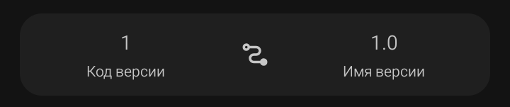

Код версии

Код версии (versionCode) — это целое число, которое однозначно идентифицирует сборку приложения. Его видит только система Android и Google Play. Пользователь это число нигде не видит.
Поле расположено в нижнем блоке экрана «Новый проект» — слева, с подписью «Код версии» под цифрой. По умолчанию там стоит 1.
Как работает
· Каждая новая сборка, загруженная в Google Play, должна иметь код версии строго больше предыдущего.
· Если код версии совпадает или меньше — магазин отклонит загрузку с ошибкой «Version code has already been used».
· Для первого релиза — 1. После первой публикации каждое следующее обновление — 2, 3, 4 и так далее.
· Для внутренних тестовых сборок (не в магазине) код можно не менять — Android установит APK поверх, если подпись совпадает.
Правила
· Только целые положительные числа: 1, 2, 100, 20260924.
· Без точек, запятых, букв, минусов.
· Максимум — примерно 2 100 000 000 (предел типа данных int в Java).
· Должен увеличиваться с каждой публикацией.
⚠️ Важно: код версии не зависит от имени версии. Можно выпустить 2.0 с кодом 15, а потом 2.0.1 с кодом 16. Или наоборот — 1.0 с кодом 5, а следующим релизом 1.0 с кодом 6. Главное — рост числа, а не его связь с именем.
⚠️ Важно: Google Play не позволит понизить код версии. Если ты ошибся и поставил слишком большое число — исправить уже нельзя, придётся выпускать релиз с ещё большим кодом.
💡 Совет: для удобства используй схему «дата»: 20260924 = 24 сентября 2026 года. Так ты всегда знаешь, какая сборка новее, и не запутаешься в нумерации.
❌ Частая ошибка: забыть увеличить код версии перед загрузкой обновления в Google Play. Магазин отклонит APK, а разбираться в причинах придётся в консоли разработчика.
❌ Частая ошибка: вписать 1.0 или 1,0 в это поле. Sketchware потребует только целое число, поле подсветится ошибкой.
Имя версии
Имя версии (versionName) — это строка, которую видит пользователь: на странице приложения в Google Play, в системных настройках Android (раздел «О приложении») и в самом приложении, если ты выводишь её через менеджер ресурсов.
Поле расположено в нижнем блоке экрана «Новый проект» — справа, с подписью «Имя версии» под значением. По умолчанию там стоит 1.0.
Как выглядит
· Формат свободный, но стандарт де-факто — major.minor.patch.
· Пример: 1.0, 1.0.0, 2.3.1, 2026.09.24.
· Рекомендуется использовать только цифры и точки. Буквы, пробелы, кириллица технически допустимы, но могут вызвать проблемы при публикации.
· Длина — в разумных пределах (до 10–15 символов). Слишком длинное значение обрежется в Google Play.
Что означают части
· major — крупное обновление, часто с изменением интерфейса или ломающими изменениями. Меняется редко: 1.0.0 → 2.0.0.
· minor — новые функции без ломающих изменений: 1.0.0 → 1.1.0.
· patch — исправления ошибок, мелкие правки: 1.0.0 → 1.0.1.
Чем отличается от кода версии
·
Код версии
— целое число для системы и Google Play (1, 2, 3). Управляет обновлениями.
·
Имя версии
— строка для пользователя (1.0, 1.1, 2.0). Просто отображается.
Эти два поля никак не связаны. Можно выпустить версию 1.0.5 с кодом 2, а затем 1.0.5 с кодом 3 — если это два разных APK с одинаковым публичным именем версии, но разными внутренними номерами.
⚠️ Важно: Google Play не использует имя версии для отслеживания обновлений. Даже если поставить 999.0 — магазин не воспримет это как «более новую» сборку. Решает только код версии.
💡 Совет: для серьёзных проектов придерживайся схемы Semantic Versioning (major.minor.patch). Так пользователи и ты сам будете понимать масштаб изменений с первого взгляда.
💡 Совет: для внутренних тестовых сборок можно добавлять суффикс: 1.0.0-beta, 1.0.0-rc1. Это удобно для отслеживания этапов разработки, но перед публикацией в Google Play суффиксы лучше убирать — иногда они мешают автоматической проверке.
❌ Частая ошибка: писать v1.0 с буквой v впереди. Технически допустимо, но выглядит непрофессионально — в системных настройках Android и в Google Play обычно показывают чистое число.
❌ Частая ошибка: оставлять имя версии неизменным при обновлении APK. Если меняется функционал — пользователь должен видеть, что версия другая, даже если код версии увеличился.
Sketchware Pro 7 · Автор: RasNikGal · © 2026